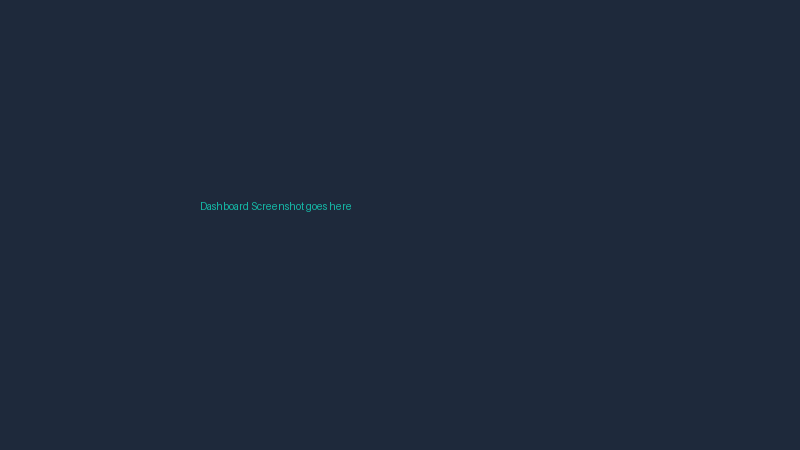

Stock Price Prediction
Built a machine learning model using LSTM networks to forecast short-term stock price movements. Created a clean, interactive UI in Streamlit for users to view historical trends and predictions in real-time.
Python
Keras
LSTM
Streamlit